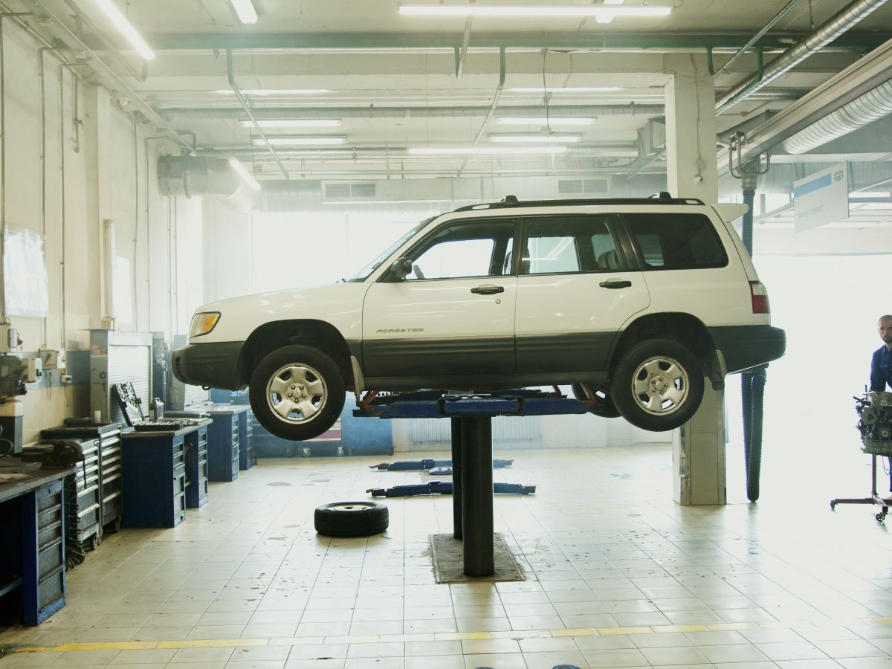
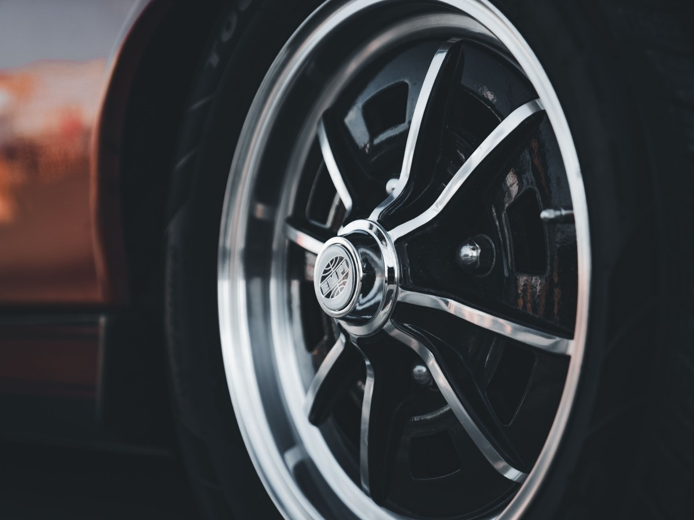
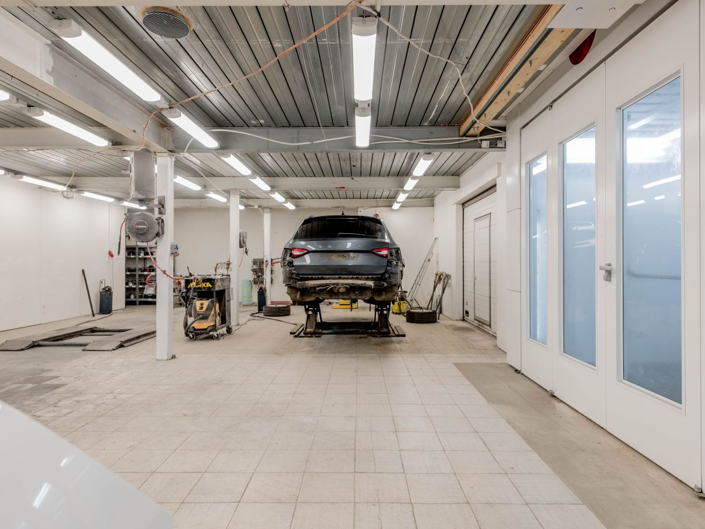
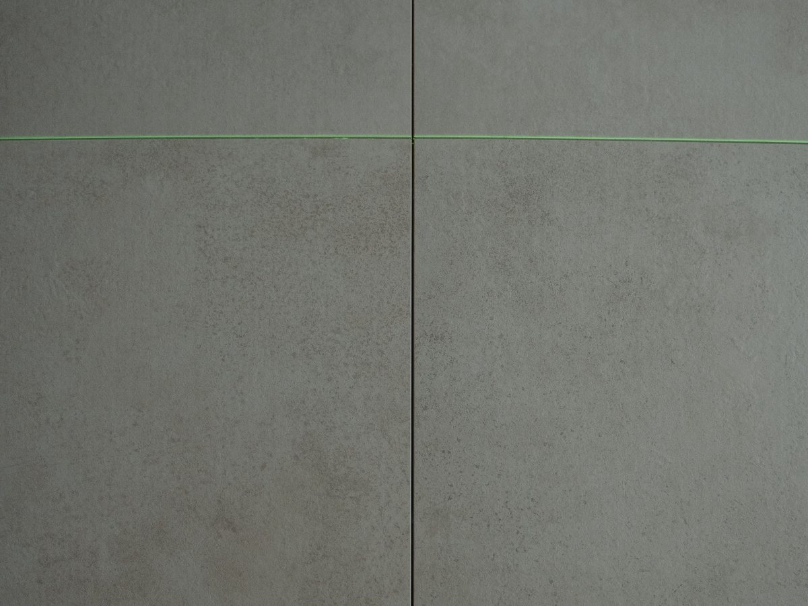
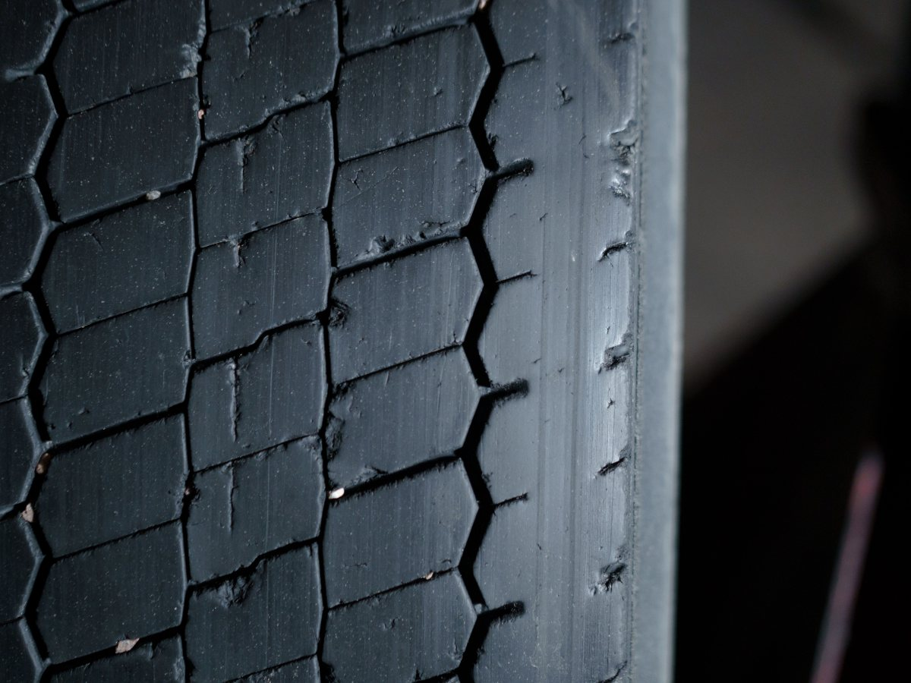
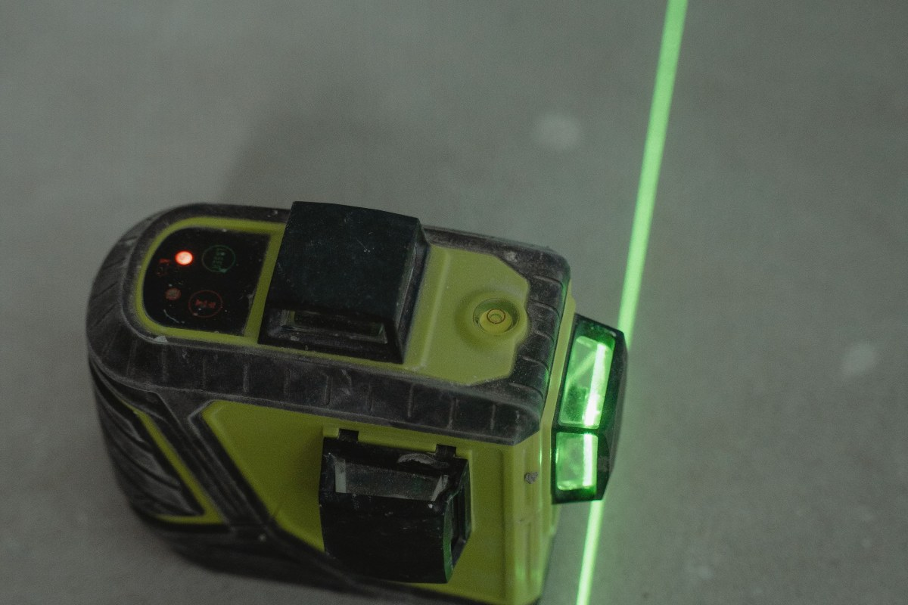
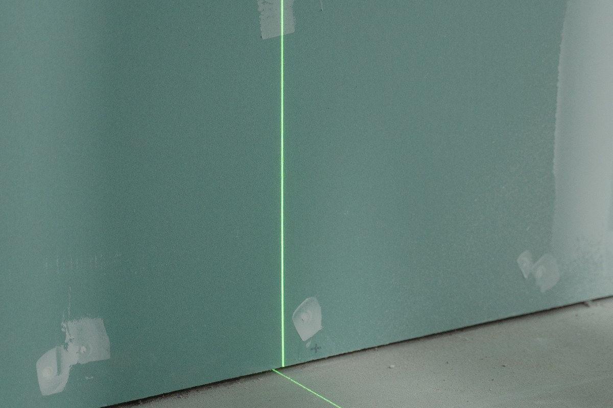
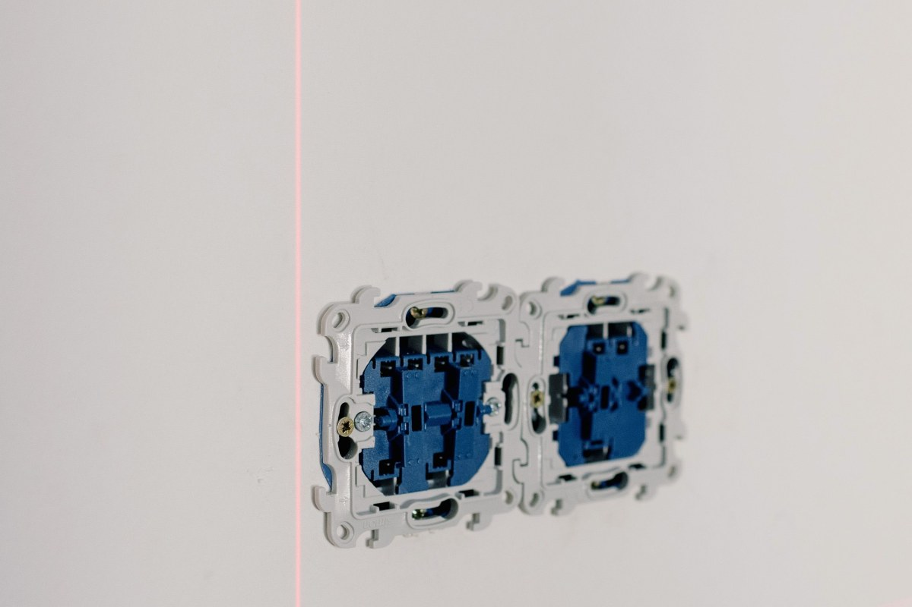
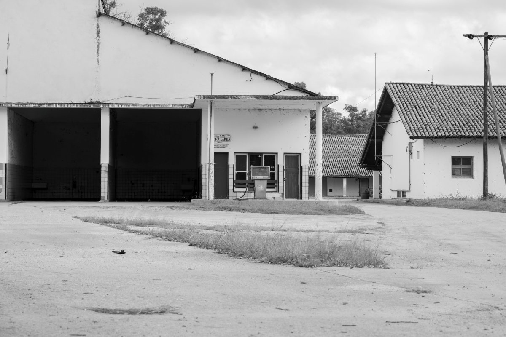

Maipú · Primera Transversal
¿El auto se va hacia un lado?
Alineación y balanceo en Maipú: 394 reseñas y un 4,6.
- 394reseñas en Google
- 4,6de nota promedio
- 10años de actividad, o más
- 0páginas propias: sólo la ficha
Alineación o balanceo
¿Cuándo alinear?
No son lo mismo: el síntoma dice cuál toca.
- TIRA A UN LADO
Suele ser alineación
Suelta el volante en recta y mire.
- VIBRA EL VOLANTE
Suele ser balanceo
Se nota más en carretera.
- GASTO DISPAREJO
Alineación
Un borde del neumático más liso.
- NEUMÁTICO NUEVO
Las dos
Cada vez que cambia ruedas.
El diagnóstico lo confirma el taller.
Un auto derecho gasta menos neumático.
En Primera Transversal
Lo que se hace en el taller
-

Lo que lo distingue
Alineación
Está en su nombre.
-

Si vibra
Balanceo
Rueda por rueda.
-

También
Cambio de aceite
Según las guías.
-
Para frenar bien
Revisión de frenos
Según las guías.
-

Lunes a viernes
Desde las 9
Hasta la tarde.
-

El sábado
En la mañana
Pregunte por WhatsApp.
Servicios y horario de guías en línea: los confirma el taller.
394 reseñas y un 4,6.
Primera Transversal, Maipú
Rueda, llanta y camino
Un día en el taller




Fotos de referencia: ninguna es del taller.
Dónde estamos
Primera Transversal, Maipú
- Dirección
- Primera Transversal 2633–2639
- +56 9 6268 2818
- Lunes a viernes
- 9–18:30
- Sábado
- 9–14:30
Las guías no coinciden en el número de la calle: confírmelo por WhatsApp.
Primera Transversal, Maipú Abrir en Google Maps
Para el dueño
Qué es real y qué falta
Lo verificado
El WhatsApp, la calle, el horario de guías y las 394 reseñas con 4,6.
Lo de ejemplo
La guía de síntomas, los servicios extra y las fotos.
Lo que falta
El número exacto de la calle, qué servicios hacen además y fotos del taller.